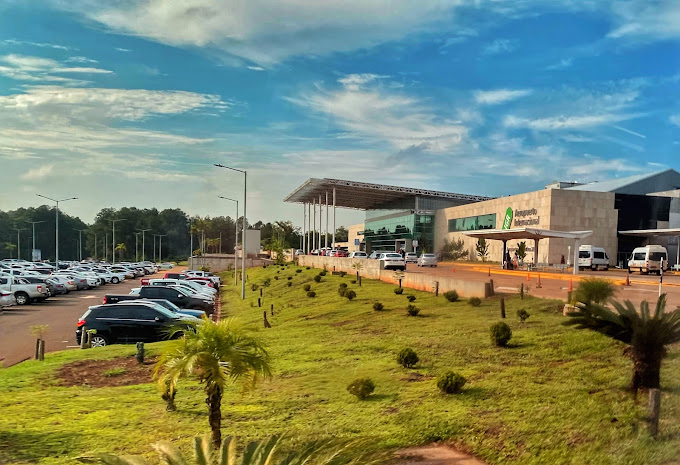
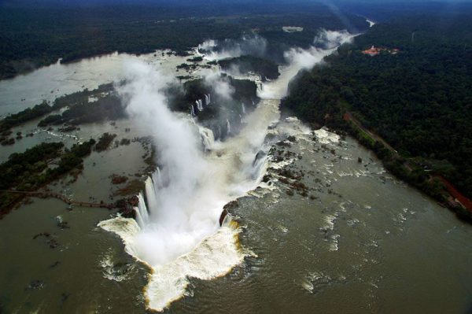
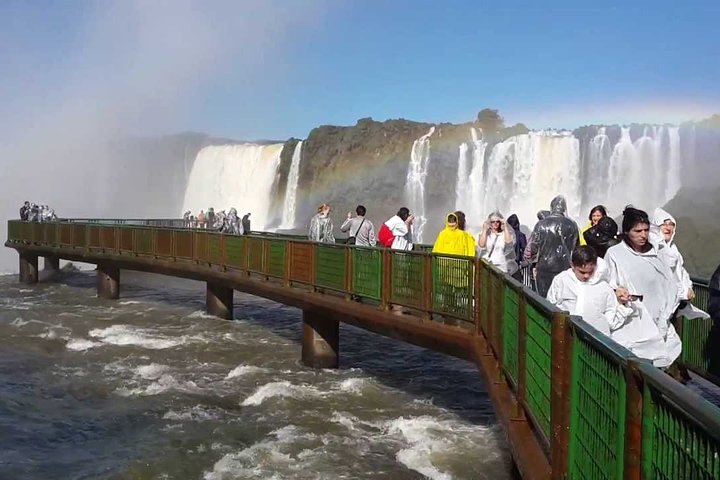
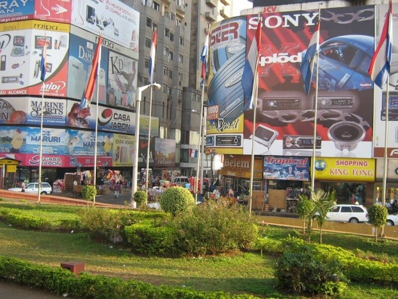
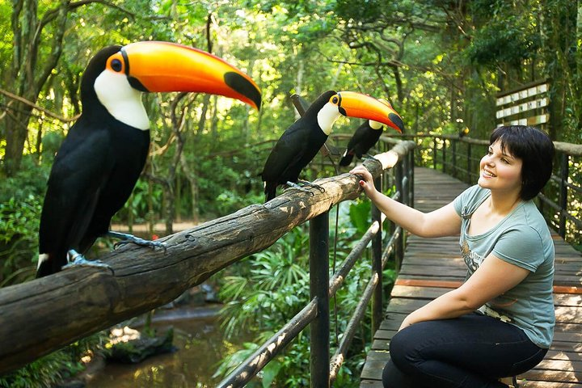
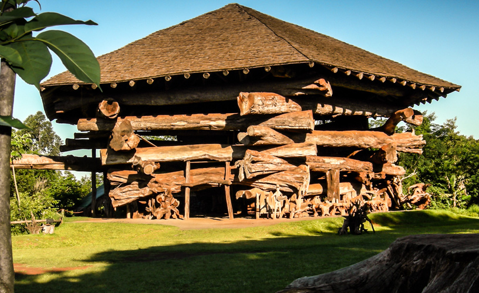
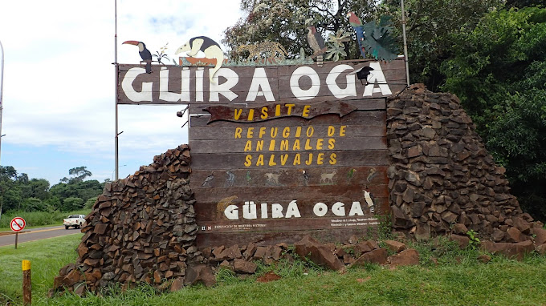
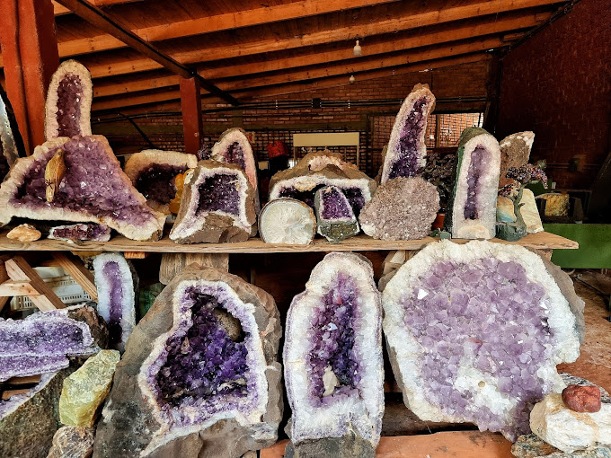
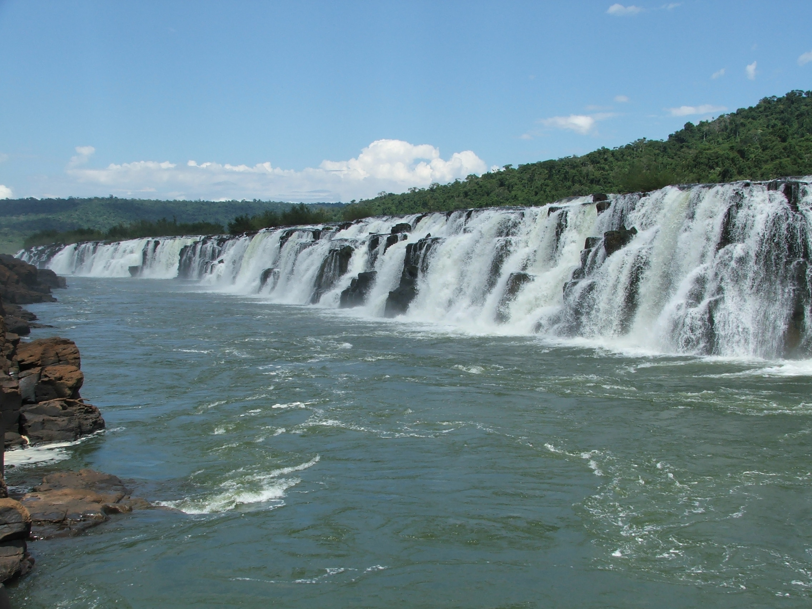
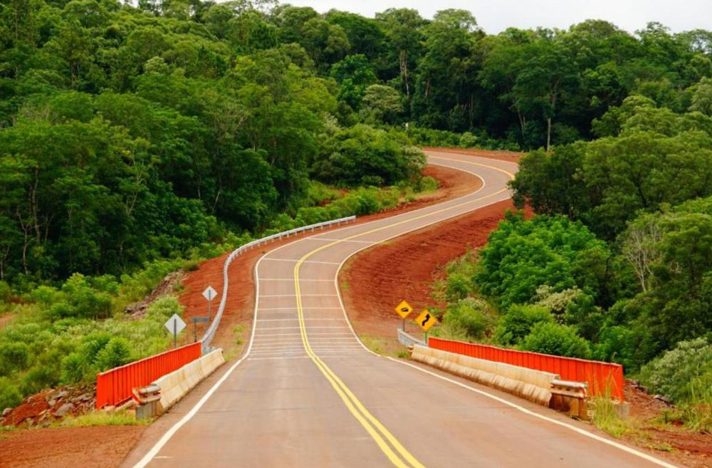

Transporte Adrián
Transfers Adrián ofrece servicios de traslado hacia y desde Aeropuertos, Terminales de Omnibus, Hoteles, y Puntos Turísticos. Somos de Puerto Iguazú y conocemos muy bien la zona. Tenemos más de 10 años de experiencia brindando nuestros servicios dentro de este único y proviliegiado lugar. No ofrecemos excursiones, pero una vez contratado alguno de nuestros servicios, podrá contar con nuestro asesoramiento (como comprar entradas a las distintas atracciones) para garantizarle la mejor estadía en nuestra región. Consulte por paquetes, para coordinar el viaje entre los diferentes puntos turísticos, hospedajes y zonas de interés en Puerto Iguazú (ARG) y Foz de Iguazú (BRA). Una vez contratados nuestros servicios, usted maneja los horarios, sin presiones ni apuros. Lo esperamos en el lugar de su alojamiento y lo recogemos en el horario acordado. Usted y su familia pasan a ser nuestra prioridad, para que pase el tiempo que esté aquí, de la mejor manera.
También traslados a:
- Duty Free Shop (Puerto Iguazú)
- Bar de hielo (Puerto Iguazú)
- Jardin de los Picaflores (Puerto Iguazú)
- Jungle Fly Iguazu
- Represa de Itaipú (Brasil)
- Templo Budista (Brasil)
- Ciudad del Este (Paraguay)
- Y muchos más...
Aeropuerto Internacional Iguazú (Argentina)
Los esperamos en el aeropuerto y lo trasladamos hasta la Ciudad de Puerto Iguazú en un viaje que dura aproximadamente 30 minutos (28km), donde atravesamos selva y el Parque Nacional Iguazú. Se les solicita para este servicio el número de vuelo, además el nombre y apellido de un integrante de la familia para realizar un cartel con él y esperarlo en la salida de pasajeros. También hacemos viajes desde el Aeropuerto Internacional Cataratas hasta:
- Hoteles de Brasil.
- Aeropuerto de Brasil.
- Hasta las localidades de Wanda, Puerto Esperanza, Puerto Libertad, Eldorado, Posadas, etc.
Cataratas del Iguazú (Argentina)
Ubicadas en la frontera entre Argentina y Brasil, quedan aproximadamente a 30 km de la ciudad de Iguazú. Las Cataratas de Iguazú forman uno de los paisajes naturales más espectaculares del mundo. En el año 2012 fueron elegidas como una de las Siete Maravillas Naturales del Mundo.
Lo asesoraremos en todo lo relacionado con poder recorrerlas con comodidad. Teniendo en cuenta la compra de los tikets para el ingreso, lo ayudaremos con la reserva de las excursiones que puede realizar y aconsejar en lo que necesite.
Conozca Foz de Iguazú (Paraguay)
Cataratas (Brasil)
Localizadas dentro del Parque Nacional do Iguaçu. Allí se sorprenderá con el cuidado, la belleza y la enormidad del mismo que alberga innumerables especies de animales y vegetales. Con pasarelas que lo llevarán hasta la mejor posición para apreciar estas bellezas.
Ciudad del Este (Paraguay)
Conocida por ser una de las zonas francas -de libre comercio- más grandes del mundo, siendo la principal ciudad más importante del país y de la región. Diariamente muchos turistas de todo el mundo, en especial brasileños y argentinos, cruzan el puente de la amistad.
Parque de las aves (Brasil)
Podrán entrar en los viveros para conocer la vida de las aves. Un mundo integrado por Aves tropicales exóticas que vuelan en amplios viveros integrados en la exuberante floresta húmeda tropical. Además de aves, yacarés, anacondas, boas, monos tití y mariposas.
La Aripuca (Iguazú)
La Aripuca es un emprendimiento Agro-Eco-Turistico familiar. Construído a base de árboles rescatados, inspirado en una típica trampa de los pueblos guaraníes, ''La Aripuca'' se impone con sus 17 metros de altura y mas de 500.000 Kgs de peso.
Güirá Oga (Iguazú)
El refugio de animales silvestres Güirá Oga ("la casa de los pájaros" en idioma guaraní) nació en base a la necesidad de contar con un establecimiento que se localizara en la misma selva misionera y trabajara con la fauna autóctona del lugar. Fue fundado el 23 de Agosto de 1997.
Minas de Wanda (Argentina)
Ubicadas a 40 kilómetros de Puerto Iguazú, se encuentran las famosas Minas de Wanda, un yacimiento de piedras semipreciosas de cristales de cuarzo, amatistas, ágatas y topacios, entre las más importantes. Recostada sobre el caudaloso río Paraná.
Saltos del Moconá (Argentina)
Ubicados a unos 300 km de Iguazú. El principal atractivo del Parque Provincial Moconá se encuentra en la naturaleza de sus saltos, un espectáculo único en el mundo producto de una falla geológica hace millones de años. Estos recorren paralelamente al río Uruguay.
Los destinos los elige usted
Estamos a su disposición para sugerirle o aceptar su propuesta de a dónde desea viajar. Tenemos basta experiencia en traslado de personas y sus familias, por lo tanto, usted estará seguro en nuestras unidades y viajará con experimentados choferes.
- Efectivo.
- Transferencia bancaria.
- Aceptamos todas las tarjetas de crédito.
- Mercado Pago
- También trabajamos con Pre Viaje.